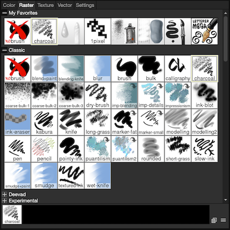
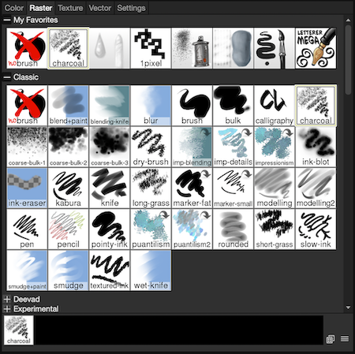
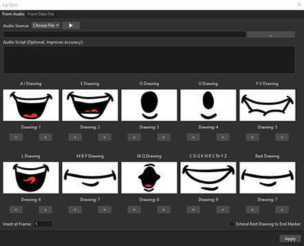
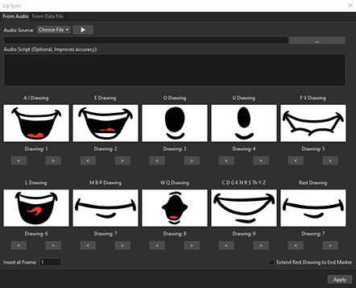
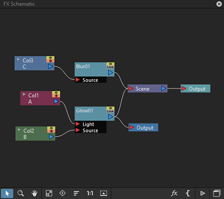
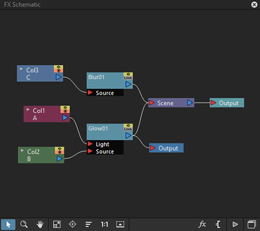

 

 


If this is an unreported issue, create an account on Github and sign-in to start a new issue.
The more information you can add (ie. screenshots, screencaptures, crash reports, and/or repeatable steps), the more likely it is that a developer will be able to fix the problem in a timely manner.
If there is already an existing bug report for the same issue, please add more information to it instead of creating a new issue.